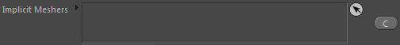
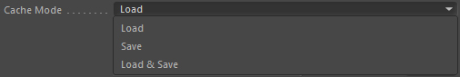
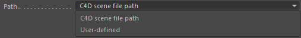
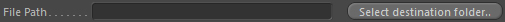
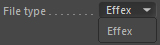
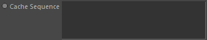
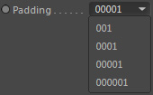
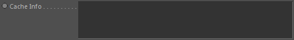
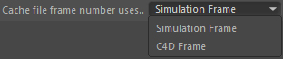

Parameters
Constraints
Parameters
Implicit Mesher

List of meshers that shall be saved or loaded.
Duration

Takes a duration node to define when the cacher should operate in time.
Only during rendering
Any operations are only executed during rendering (picture viewer/NET).
Cache Mode

Define what caching mode you want to set up. Load, Save or Load and Save (which will load the cached data and overwrite it at the end of the frame).
Path

Defines the folder mode.
C4D scene file path
Uses the C4D scene file path. The scene must have been saved.
User-Defined
Uses the path defined by the user. See File Path
Select destiantion folder

Opens the folder selection dialog of your OS in order to let you choose a user defined in-/output path.
The result of your choice will be displayed in the File Path field.
File Path

The current user-defined in-/output path. You can manually change the path here or use Select destination folder...
File Name
The file name of the in-/output files WITHOUT the file type extension (suffix) and without any frame numbers.
Effex requires a special naming convention of the file sequences to be loaded correctly:
[File Name][Frame Number encoded in 5 digits].[SUFFIX]
The frame number encoding length is defined by the Padding
No dots may be used in the file sequence names. Only the file suffix should have a dot in front of it.
For example using "my_Mesher_Name_" (in Frame 123) results in: my_Mesher_Name_00123.mcache
Fily Type

Choose a file type for caching the mesh. Currently only the Effex file format is available.
Cache Sequence

Provides information about the cache file sequence on disk and about its content if available.
Delete Sequence
Deletes the files of the sequence (given by the file path and file name) on your hard disk.
Padding

Define the padding style added to each cache file name.
Parameters::Load
Reverse loading order
This will reverse the loading order of cached frames.
Instead of loading the first frame first, it will load the last frame first.
Frame to load
Controls the frame which should be loaded.
If this setting is at -1, it will automatically detect the correct frame based on the current C4D frame.
So it sequentially loads the caches. Any other value >= 0 will directly load the corresponding cache frame (so if set to 21 it will load cache frame 00021).
Frame Offset
Adds an offset to the cache frame number to be loaded.
An offset of -10 for example will let the loading only start at frame 10 (loading cache frame 0).
An offset of +10 will load cache frame 10 at frame 0.
Cache Info

Displays information about the cache content
Parameters::Save
Compress if possible
This will activate compression of data during cache saving.
This will reduce the file sizes tremendously, however writing & loading
will be slower (writing is already quite a slow operation in the pipeline...depending on your hard drive).
Cache file frame number uses..

Controls which frame number to encode into the file name of the cache files.
Simulation Frame
The simulation frame is used. This is the default setting. The first simulation frame will always be 00000.
C4D Frame
The C4D frame is used. The first C4D frame does not necessarily have to be frame 0. If your document timeline range
starts with 61234, then the first cache frame will be named cacheFileName61234.cache.